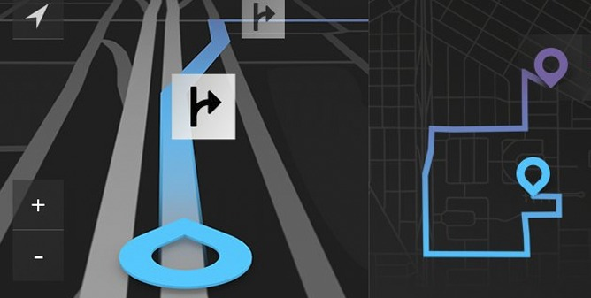

Earlier Work
Adobe, Nokia, and THANK YOU Studio. Agency and in-house, San Francisco and Copenhagen, before Amazon.
2006 to 2015
THANK YOU Studio, 2012 to 2015
Partner and VP of Product Design. Studios in San Francisco and Copenhagen. Reimagined Toyota's in-vehicle navigation system. Delivered the UX for Amazon's first Fire tablets and concept directions for the Fire Phone. Proof-of-concept work for Toyota, Amazon, Adobe, and other enterprise clients.
Nokia images
Nokia, 2009 to 2012
Director of UX Design. Owned mobile application design strategy across teams in San Francisco, Boston, Montreal, Oulu, and Helsinki, shipping for Symbian and MeeGo.
Adobe images
Adobe, 2006 to 2009
Creative Director. Led the redesign of Adobe.com and the digital experience behind dozens of Creative Suite launches.